2 Amostragem e Quantização
A representação digital de imagens é um dos pilares fundamentais do Processamento Digital de Imagens (PDI). Para que uma cena do mundo real possa ser manipulada por um computador, é necessário transformá‑la de uma forma contínua, tanto no espaço quanto na intensidade luminosa, em uma representação discreta. Esse processo ocorre por meio de duas etapas essenciais: amostragem e quantização.
Neste capítulo são apresentados os fundamentos conceituais dessas etapas, relacionando‑as à percepção visual humana, aos sensores de aquisição de imagens e aos modelos matemáticos utilizados para representar imagens digitais.
2.1 Elementos da Percepção Visual
2.1.1 Sistema de Processamento de Imagens
Um sistema de processamento de imagens pode ser descrito como um conjunto de etapas que envolvem aquisição, processamento, armazenamento e saída de imagens, conforme ilustrado em Figura 2.1. A aquisição é realizada por dispositivos como câmeras de vídeo e scanners, enquanto o processamento ocorre em um computador. A saída pode ser exibida em monitores, impressoras ou outros dispositivos gráficos, e o armazenamento é feito em mídias digitais.
Essa estrutura é inspirada, em muitos aspectos, no próprio sistema visual humano, que serve como referência para o desenvolvimento de modelos computacionais de visão.
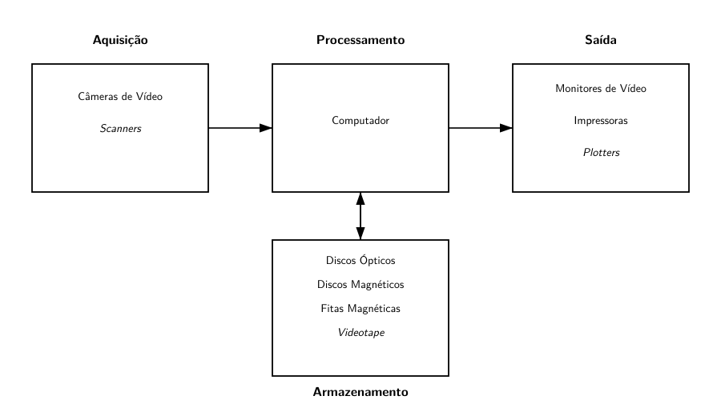
2.1.2 O Olho Humano e a Formação da Imagem
O olho humano funciona como um sofisticado sistema óptico (Figura Figura 2.2). A luz proveniente dos objetos atravessa a córnea e o cristalino, sendo focalizada sobre a retina. Na retina encontram‑se os fotorreceptores, responsáveis por converter a energia luminosa em sinais elétricos que são transmitidos ao cérebro pelo nervo óptico.

A imagem formada na retina é invertida, e o cérebro realiza a interpretação e a reconstrução da cena observada. Esse processo evidencia que a percepção visual não é apenas um fenômeno físico, mas também cognitivo.
2.1.3 Fóvea, Cones e Bastonetes
A retina possui duas classes principais de fotorreceptores: bastonetes e cones, Figura Figura 2.3. Os bastonetes são altamente sensíveis à luz e estão associados à percepção de brilho, enquanto os cones são responsáveis pela percepção de cores.
A região da fóvea, uma pequena depressão circular localizada no centro da retina, concentra uma grande densidade de cones, sendo responsável pela alta acuidade visual. Essa característica inspira o projeto de sensores de imagem, como os dispositivos CCD e CMOS, que utilizam matrizes de elementos sensíveis à luz para capturar imagens digitais.
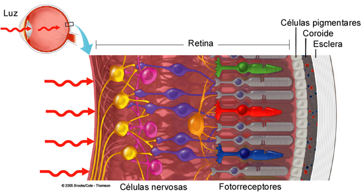
2.2 Ilusões de Ótica e Percepção
O estudo das ilusões de ótica revela limitações e particularidades do sistema visual humano. Em situações onde o cérebro não consegue interpretar corretamente os estímulos visuais, ele tende a completar a informação com base em experiências prévias e padrões memorizados.
Fenômenos como o efeito Mach (Figura Figura 2.4), a percepção de contraste e distorções associadas a linhas e formas (Figura Figura 2.5) demonstram que a intensidade percebida nem sempre corresponde à intensidade física real. Esses efeitos são relevantes em PDI, pois técnicas de realce e segmentação exploram princípios semelhantes aos do sistema visual humano.
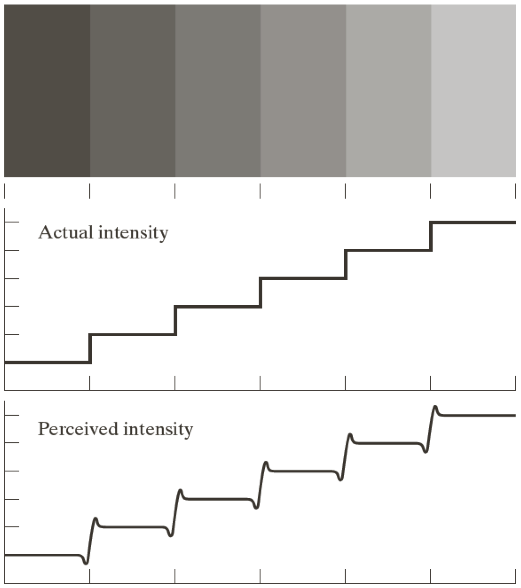
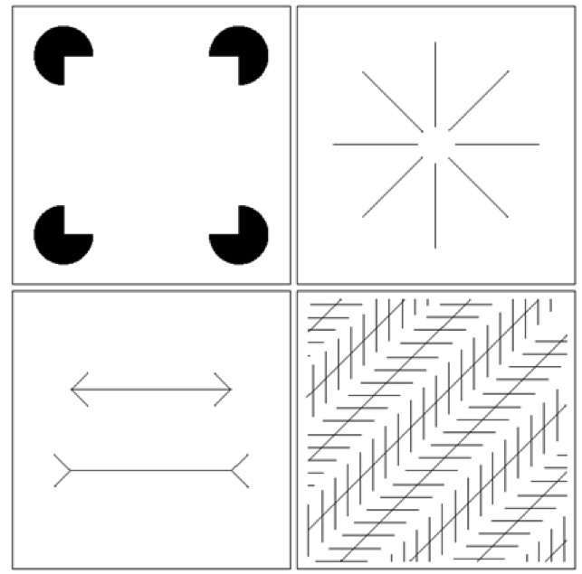
2.3 Imagens Digitais e Sensores
2.3.1 Espectro Visível
O espectro visível (Figura Figura 2.6) corresponde a uma pequena faixa do espectro eletromagnético, compreendida aproximadamente entre os comprimentos de onda do violeta ao vermelho. Embora estreita, essa faixa é suficiente para representar uma grande variedade de informações visuais utilizadas em aplicações cotidianas.
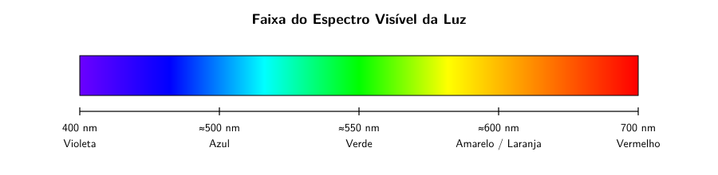
2.3.2 Sensores de Imagem
A aquisição de imagens digitais é realizada por sensores que convertem energia luminosa em sinais elétricos. Um sensor simples consiste em um material sensível à luz que gera uma tensão proporcional à intensidade luminosa incidente.
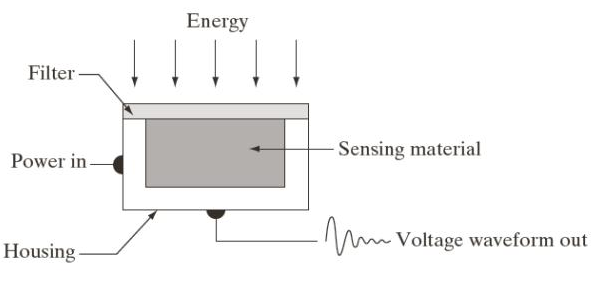
Os sensores podem ser classificados em:
- Sensores lineares, que capturam imagens linha a linha;
- Sensores matriciais, que utilizam uma matriz bidimensional de elementos sensíveis à luz, sendo os mais comuns em câmeras digitais modernas.
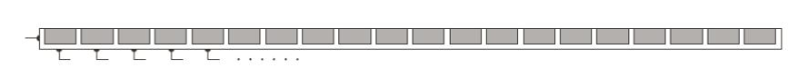
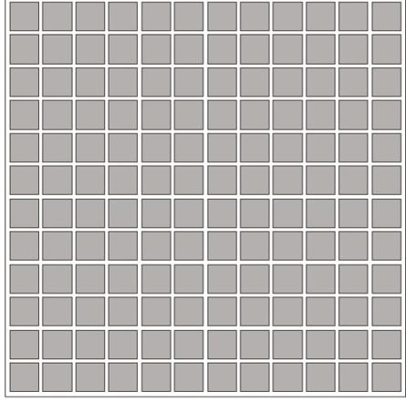
2.4 Amostragem
2.4.1 Conceito de Amostragem
A amostragem corresponde à discretização espacial da imagem. Uma cena contínua é convertida em um conjunto finito de pontos, organizados em uma grade regular. Cada ponto da grade representa um pixel da imagem digital.
Matematicamente, considera‑se uma função contínua de intensidade (f(x,y)), que, após a amostragem, passa a ser definida apenas em posições discretas de (x) e (y).
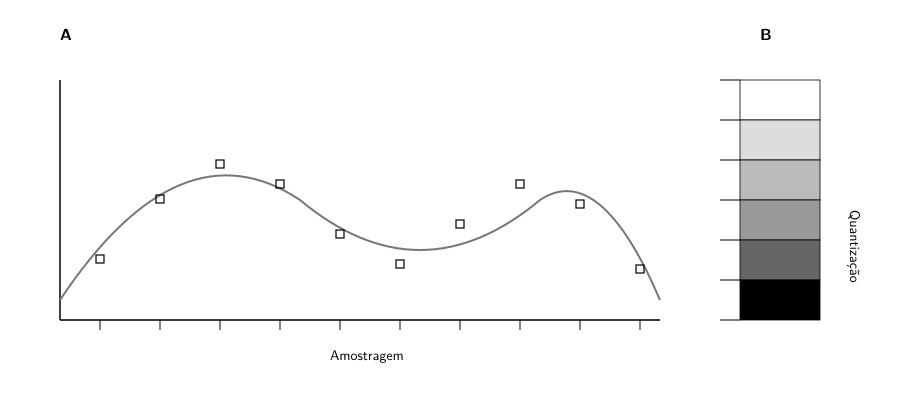
2.4.2 Resolução Espacial
A resolução espacial de uma imagem está relacionada ao número de amostras por unidade de comprimento, sendo frequentemente expressa em DPI (dots per inch). Quanto maior a resolução, maior o número de pixels utilizados para representar a imagem e maior o nível de detalhe visual.
Imagens com o mesmo tamanho físico podem apresentar resoluções diferentes, resultando em níveis distintos de nitidez. Da mesma forma, imagens com a mesma resolução podem ter tamanhos físicos diferentes.
2.5 Quantização
2.5.1 Conceito de Quantização
A quantização refere‑se à discretização dos valores de intensidade da imagem. Enquanto a amostragem define onde a imagem é medida, a quantização define quais valores essas medições podem assumir.
Sejam (L) os níveis possíveis de intensidade, normalmente escolhidos como uma potência de dois:
\[ L = 2^k \]
onde (k) é o número de bits utilizados para representar cada pixel.
2.5.2 Profundidade de Bits
A profundidade de bits influencia diretamente a qualidade visual da imagem. Por exemplo:
- 8 bits por pixel permitem 256 níveis de cinza;
- 4 bits por pixel permitem 16 níveis;
- 2 bits por pixel permitem apenas 4 níveis.
Reduções na quantização podem introduzir efeitos visuais indesejados, como perda de detalhes e aparecimento de bandas de intensidade.
2.6 Representação da Imagem Digital
Uma imagem digital pode ser representada como uma matriz numérica, em que cada elemento corresponde ao valor de intensidade de um pixel. A Figura Figura 2.8, ilustra os valores dos pixels (1 ou 0) numa imagem binária. Para imagens em tons de cinza, essa matriz contém valores escalares, conforme ilustrado na Figura 2.9.
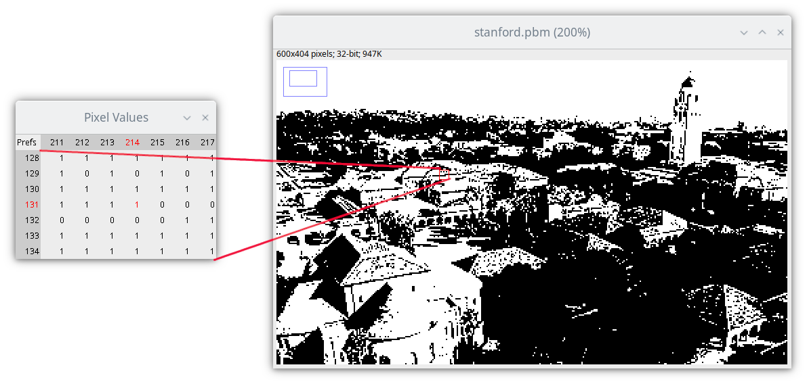
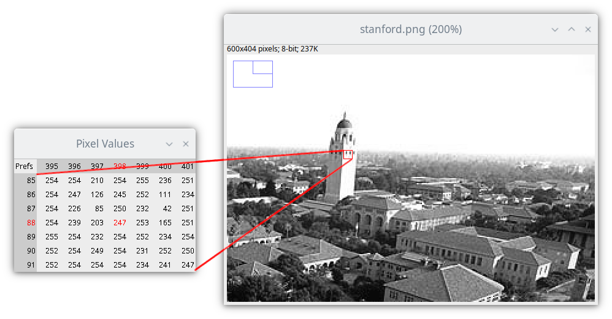
O exemplo interativo seguinte, apresenta uma ferramenta de zoom para melhor visualizar a representação matricial para imagens em tons de cinza. Para interação, movimente o mouse sobre a imagem à esquerda para selecionar uma região. Na imagem à direita será apresentada uma amostra ampliada (zoom), dos pixels correspondentes na região selecionada.
Para imagens coloridas, a representação pode envolver:
- tabelas de cores;
- camadas de cores, como os canais vermelho, verde e azul (RGB). (Figura Figura 2.10)
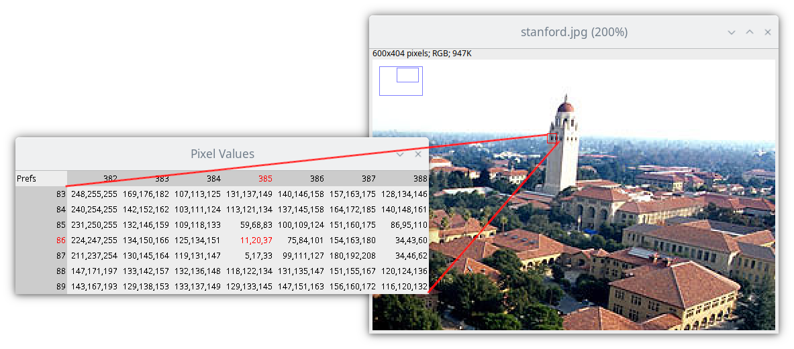
Além da representação matricial, a imagem também pode ser interpretada como uma superfície tridimensional, na qual as coordenadas espaciais definem a posição do pixel e a intensidade define a altura da superfície (Figura Figura 2.11).
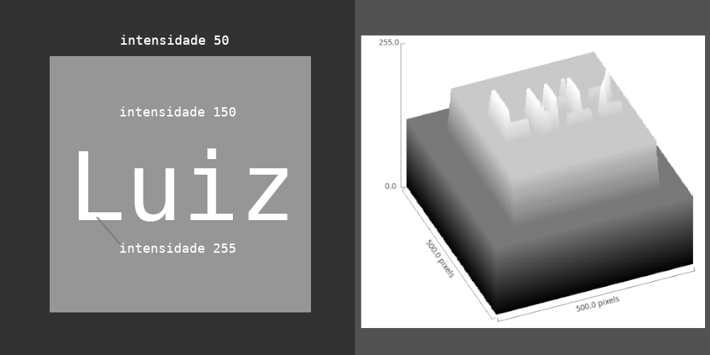
O exemplo interativo seguinte permite uma visualização de uma imagem como superfície:
2.7 Os formatos PBM, PGM e PPM de imagens
Os formatos PBM, PGM e PPM pertencem à família Netpbm e são amplamente utilizados no ensino e na pesquisa em Processamento Digital de Imagens, principalmente por sua simplicidade e transparência na representação dos dados. Esses formatos descrevem explicitamente os valores dos pixels, sem empregar técnicas sofisticadas de compressão, o que facilita a compreensão de como uma imagem digital é armazenada e manipulada. Cada formato é voltado para um tipo específico de imagem: binária, em escala de cinza ou colorida.
O formato PBM (Portable Bitmap) é utilizado para representar imagens binárias, nas quais cada pixel assume apenas dois valores possíveis. Tipicamente, o valor 0 representa a cor branca e o valor 1 representa a cor preta. Por esse motivo, o PBM é especialmente adequado para máscaras, imagens segmentadas e resultados de processos de limiarização. Por trabalhar com apenas um bit por pixel, esse formato é conceitualmente simples e frequentemente empregado em exemplos introdutórios de binarização e análise lógica de imagens.
P1
5 5
0 0 1 0 0
0 1 1 1 0
1 1 1 1 1
0 1 1 1 0
0 0 1 0 0O formato PGM (Portable Graymap) é destinado à representação de imagens em escala de cinza. Nesse caso, cada pixel é descrito por um único valor numérico que indica seu nível de intensidade luminosa, geralmente variando entre 0 (preto) e 255 (branco). Imagens PGM são muito utilizadas em processamento de imagens por permitirem uma análise direta dos níveis de cinza, sendo ideais para o estudo de filtros, detecção de bordas, realce de contraste e transformações pontuais. Sua estrutura simples torna explícita a relação entre valores numéricos e intensidades visuais.
P2
5 5
255
0 50 100 150 200
50 100 150 200 255
100 150 200 255 200
150 200 255 200 150
200 255 200 150 100Já o formato PPM (Portable Pixmap) é empregado para imagens coloridas, representadas no modelo RGB. Cada pixel é descrito por três valores inteiros correspondentes às componentes vermelha (Red), verde (Green) e azul (Blue), normalmente também no intervalo de 0 a 255. Dessa forma, o PPM permite representar uma ampla gama de cores, sendo frequentemente usado como formato intermediário em conversões e experimentos. Apesar de gerar arquivos maiores, sua clareza estrutural facilita o entendimento da composição das imagens coloridas.
P3
3 2
255
255 0 0 0 255 0 0 0 255
255 255 0 0 255 255 255 0 255Os três formatos admitem duas variações: uma versão ASCII, legível por humanos, e uma versão binária, mais compacta e eficiente em termos de armazenamento. As versões ASCII são particularmente úteis em contextos didáticos, pois permitem a inspeção direta dos valores dos pixels em um editor de texto. Já as versões binárias são mais adequadas para aplicações práticas, devido ao menor tamanho dos arquivos e à maior velocidade de leitura e escrita.
Em conjunto, os formatos PBM, PGM e PPM desempenham um papel fundamental no ensino do Processamento Digital de Imagens, pois tornam explícita a relação entre a representação numérica e a aparência visual das imagens. Ao trabalhar com esses formatos, o estudante pode compreender de forma concreta conceitos como pixel, nível de cinza, cor e quantização, estabelecendo uma base sólida para o estudo de técnicas mais avançadas.
2.7.1 Para ler um arquivo PNM
Abaixo o código em linguagem C para ler arquivo nesses formatos
/*-------------------------------------------------------------------------
* Read pnm ascii image
* Params (in):
* name = image file name
* tp = image type (BW, GRAY or COLOR)
* Returns:
* image structure
*-------------------------------------------------------------------------+*/
image img_get(char *name, int tp)
{
char lines[100];
int nr, nc, ml;
image img;
FILE *fimg;
/*--- PNM = "P1" or "P2" or "P3" ---*/
fgets(lines, 80, fimg);
/*--- Comment lines ---*/
fgets(lines, 80, fimg);
while (strchr(lines, '#'))
fgets(lines, 80, fimg);
sscanf(lines, "%d %d", &nc, &nr);
if (tp != BW)
fscanf(fimg, "%d", &ml);
else
ml = 1;
img = img_create(nr, nc, ml, tp);
for (int i = 0; i < nr * nc; i++)
if (tp != COLOR)
{
int k;
fscanf(fimg, "%d", &k);
img->px[i] = k;
}
else
{
int r, g, b;
fscanf(fimg, "%d %d %d", &r, &g, &b);
img->px[i] = (r << 16) + (g << 8) + b;
}
fclose(fimg);
img_info(name, img);
return img;
}2.7.2 Salvar um arquivo PNM
Abaixo o código para gravar a imagem nestes formatos.
/*-------------------------------------------------------------------------
* Write pnm image
* Params:
* img = image structure
* name = image file name
* tp = image type (BW, GRAY or COLOR)
*-------------------------------------------------------------------------*/
void img_put(image img, char *name, int tp)
{
int count;
FILE *fimg;
fprintf(fimg, "P%c\n", tp + '0');
fputs(CREATOR, fimg);
fprintf(fimg, "%d %d\n", img->nc, img->nr);
if (tp != BW)
fprintf(fimg, "%d\n", img->ml);
count = 0;
for (int i = 0; i < img->nr * img->nc; i++)
{
if (tp != COLOR)
{
int x = img->px[i];
fprintf(fimg, "%3d ", x);
}
else
{
int r = (img->px[i] >> 16) & 0xFF;
int g = (img->px[i] >> 8) & 0xFF;
int b = img->px[i] & 0xFF;
fprintf(fimg, "%3d %3d %3d ", r, g, b);
}
count++;
if (count > PER_LINE)
{
fprintf(fimg, "\n");
count = 0;
}
}
fclose(fimg);
}Onde a imagem (image) está representada na seguinte estrutura:
#define CREATOR "# CREATOR: Image Processing using C-Ansi - ByDu\n"
typedef struct
{
int *px; // pixels vector
int nr, nc, ml; // nr = n.rows, nc = n.columns, ml = max level
int tp; // tp = type
} * image;
enum
{
BW = 1,
GRAY,
COLOR
};Um programa para abrir uma imagem em formato PGM, calcular o negativo da imagem, salvar o resultado e chamar um visualizador de imagem para apresentar o resultado é o seguinte:
image neg_pgm(image In)
{
image Out = img_clone(In);
for (int i = 0; i < In->nr * In->nc; i++)
Out->px[i] = In->ml - In->px[i];
return Out;
}
void msg(char *s)
{
printf("\nNegative image");
printf("\n-------------------------------");
printf("\nUsage: %s image-name[.pnm] tp\n\n", s);
printf(" image-name[.pnm] is image file file \n");
printf(" tp = image type (1 = BW, 2 = Gray, 3 = Color)\n\n");
exit(1);
}
/*-------------------------------------------------------------------------
* main function
*-------------------------------------------------------------------------*/
int main(int argc, char *argv[])
{
int nc, nr, ml, tp;
char *p, nameIn[100], nameOut[100], cmd[110];
image In, Out;
//-- define input/output file name
img_name(argv[1], nameIn, nameOut, GRAY, GRAY);
//-- read image
In = img_get(nameIn, tp);
//-- transformation
Out = neg_pgm(In);
//-- save image
img_put(Out, nameOut, tp);
//-- show image
sprintf(cmd, "%s %s &", VIEW, nameOut);
system(cmd);
img_free(In);
img_free(Out);
return 0;
}2.8 Considerações Finais
A amostragem e a quantização constituem a base da representação digital de imagens. A escolha adequada da resolução espacial e da profundidade de quantização é fundamental para garantir um equilíbrio entre qualidade visual, custo computacional e requisitos de armazenamento.
A compreensão desses conceitos é essencial para o estudo de técnicas mais avançadas de processamento de imagens, como filtragem, segmentação, compressão e reconhecimento de padrões, abordadas nos capítulos seguintes.